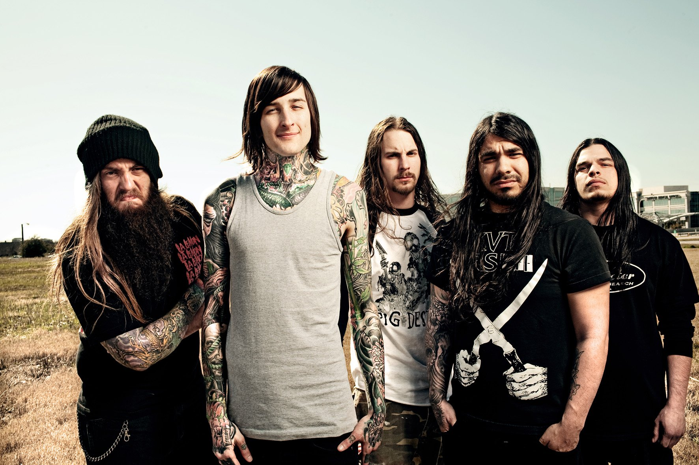

NOVO ÁLBUM
20 NOV 2026
GRACELESS
Suicide Silence
O Suicide Silence prepara o lançamento de “Graceless”, novo álbum com 11 faixas que retoma elementos das raízes Deathcore da banda.
Ler matéria → Fonte: Century Media Records